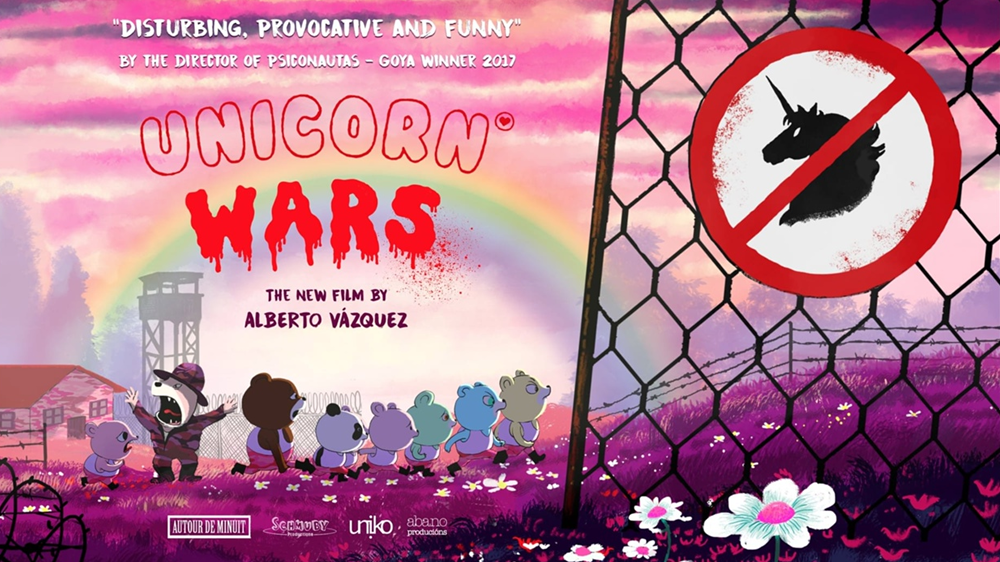

- - Homeless Home
- Там грустно, в стране темного лорда-властелина все пьют и грустят
- - Unicorn Blood
- (прото Unicorn wars)
- ДОЛОР ЭТО БОЛЬ (христианская отсылка погоняет христианской отсылкой)
- - Decorado
- Порция экзистанциального ужаса
- - Birdboy
- (прото Psiconautas)
- Фильм лучше
- - И парочка студенчиских
- Даж ссылки нет
Альберт Вескезе
Альберт Васкес - это художник и режиссер, известный своими работами в мире комиксов и анимации. Он является создателем анимационных фильмов "Birdboy" и "Unicorn Wars".
ОН СДЕЛАЛ МНОГО КРУТЫХ ШТУК
- Короткометражечки
- Полномметражочки
- Unicorn Wars (2022)
- Psiconautas (2015)
А БОЛЬШЕ НЕ БУДЕТ АХАХАХАХ и еще начало потеряно
DECORADO
Homeless Home
Unicorn blood
Birdboy

Миска с отчаянием

О чем концовка?

Очень жду